I heard Vientiane is the smallest capital in Asia, so it seemed like a ordinal small town.
It was my feeling that people were very simple and kind. Tuk-Tuk in Laos was of use, for the cost was moderate 2,500 to 5,000kip, 1USD=9,600kip, one time. If I were in other countries, for example Thailand and Vietnam, I wouldn't ride on it because they were expensive and unclear price was requested. Sandwich was also nice as simple one. Thalat Sao is a morning market has every things and it seemed not to adjust foreigner so prices were cheep.
Tourist spots
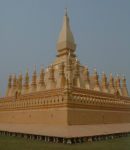 | 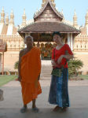 | 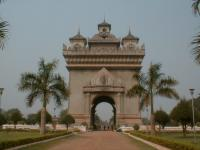 | 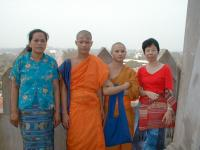 |
| That Luang 01 | That Luang 01 | Patousay 01 | Patousay 02 |
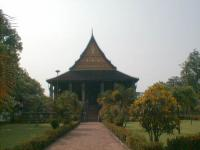 | 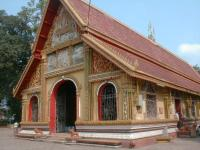 | 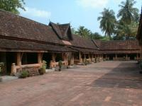 | 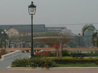 |
| Wat Ho Phra Keo | Wat Seaman | Wat Sisaket | the fountain in the center of city |
In the city there are many temples and monks. Some old temple were built in 14 century when the capital moved from Luang Prabang. We could talk with Laotian, especially young monks, because they were very friendly and monks we met at tourist spots could speak English. Wat Ho Phra Keo was called Emerald Temple but emeralds were taken away to Thailand long time before.
Other
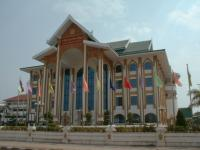 | 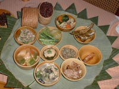 | 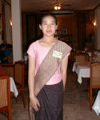 | 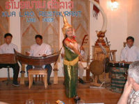 |
| Lao National Culture Hall | Laotian food | at Kua Lao Restaurant | Laotian dance |
Lao National Culture Hall was the most beautiful and biggest building I saw in Laos. Laotian food was not spicy so it tasted more fitted for us than Vietnamese food and was nice. Laotian dance was very similar to Thailand's. I guess Laos is close to Thailand because not only historical reason but also some TV stations which are from Thailand.
Luang Prabang
Luang Prabang is a smaller city than Vientiane but a older city as the former capital. Main street is a little bit modern and foreigner take meal and do shopping there. Other streets are used by local people. Anyway town itself was simple, of course, people seemed very simple and kind. I didn't feel any dangerous as walking roads and asking people anything. Tourists I met in tours also said that. So we became fans of Laos.
Tourist spots
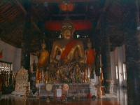 | 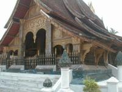 | 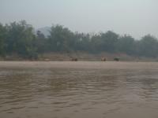 | 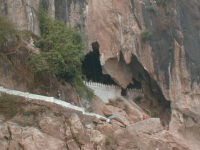 |
| Wat Aham | Vatxiengthongratsavoravihanh | Mekong River | Pak Ou Cave |
We found many temples, and some are old, beautiful and famous in Laos but not large and special.
Maybe 13 century was golden ages for around this country, Laos, Thailand, Vietnam and Myanmar. Old temple were made in those eras. Famous Pak Ou Cave is the biggest cave around here and has over 4,000 statues of Buddha which were small and ordinal people used were brought from city to prevent from wars.
Villages of making rice wine and of fishing
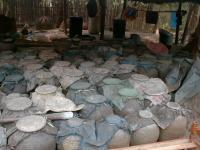 | 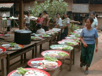 | 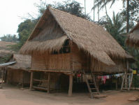 | 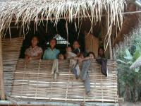 |
| village of making rice wine 01 | village of making rice wine 02 | village of making rice wine 03 | village of making rice wine 04 |
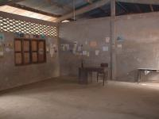 | 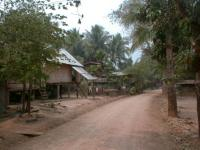 | 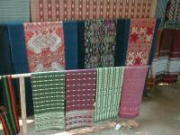 | 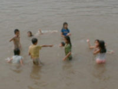 |
| village of making rice wine 05 | a fishing village 01 | a fishing village 02 | near a landing place |
We visited a making rice wine village to see, and a fishing village to have lunch. As we visited a making rice wine village, they had had a celebration after a festival, so they didn't make wine during the event and had meals with wine and music. Their houses were not folk material but they really lived. I felt some nostalgia for soil yard in front of houses and simple lives they perhaps have done.
I found a very small school and class rooms which didn't have desks and chairs so I was anxious and asked how children would study. It was why they were brought out to being festival. We ate lunch brought from the city at a opened shed in front of a fishing village. Around here had very good scenery as the opposite side of the cave.
Village across the river
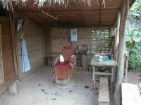 | 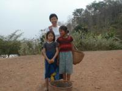 | 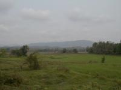 | 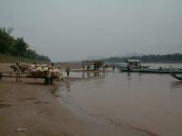 |
| a village 01 | a village 02 | a village 03 | a village 04 |
Last day of Luang Prabang we had free time so we took a walk and found a village across the river.
We chartered a boat, 2,000kip included waiting some hours. I landed but noting there, however when we walked through the strange village, folks just smiled watching us. We met children walking forward fields and asked them to take photos. They nod and after taking photos I showed it, then elder girl made face red soon, which was lovely. After we said good bye, they some times looked back and shock hands for us as if they knew we left this city next day.
{kind=link}
{kind=link}
{kind=link}
{kind=link}
{kind=link}
{kind=link}
{kind=link}
{kind=link}
{kind=link}
{kind=link}